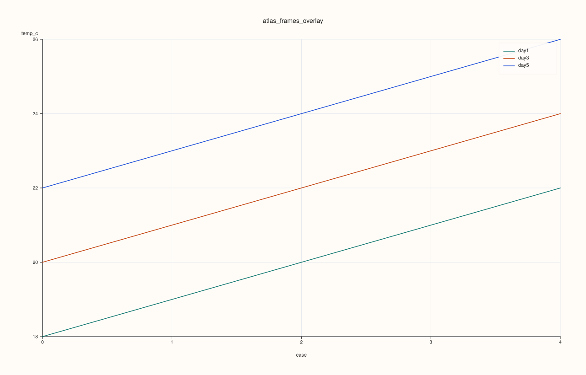
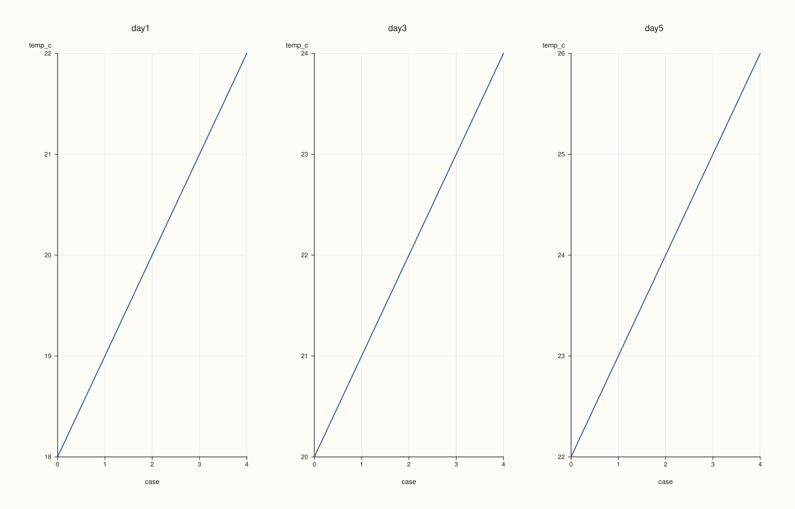
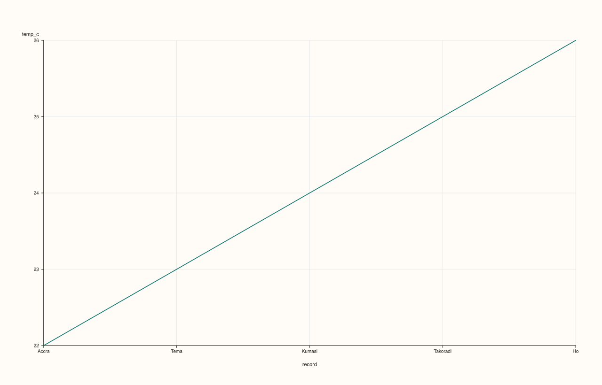

ArchivePlotAccessor::frames¶
Back to ArchivePlotAccessor API Reference
Signatures¶
ArchivePlotAccessor::frames(std::int64_t frame_index = 0) const -> CatalogPlotAccessor
ArchivePlotAccessor::frames(pluss::msharp::RangeView::Int frame_indices,
std::string_view y_key,
std::optional<std::string_view> x_key = std::nullopt) const -> pluss::pl::Studio
ArchivePlotAccessor::frames(pluss::msharp::RangeView::Int frame_indices,
std::string_view y_key,
std::optional<std::string_view> x_key,
const pluss::table::AtlasFramesPlotOptions& options) const -> pluss::pl::Studio
What It Does¶
Two genuinely different things share the name frames(), mirroring
AtlasPlotAccessor::frames one layer up:
The single-index overload (
frames(frame_index)) is an entry point, not a chart builder — it returns aCatalogPlotAccessorbound to one catalog of the stack (archive.catalog(frame_index).plot(options().figure)), so you can call any of that accessor’s own plotting methods (.line(...),.scatter(...),.hist(...), etc.) on a single depth-slice as if it were a standaloneCatalog. Supports negative indexing (-1is the last catalog); an out-of-range index throws"Archive: index out of bounds"— this check runs at theArchive::catalog()layer, beforeArchivePlotAccessorgets involved at all.The multi-index overloads (
frames(indices, y_key, ...)) build an actualpluss::pl::Studiochart directly, overlaying (or faceting) the same key across several catalogs at once.
Important
The multi-index overloads delegate through a freshly built AtlasPlotAccessor
Every multi-index call tabelizes the selected catalogs (Catalog::tabelize(), projected to
just y_key/x_key first) into DataFrames, wraps them in a fresh
pluss::table::AtlasPlotAccessor, and calls that accessor’s own frames() — reusing
AtlasPlotAccessor::frames’s logic exactly rather than
duplicating it. This means the frame-index resolution rules (negative wraps, duplicates
dedupe, out-of-range throws) are identical to Atlas’s — but the throw message still says
"Atlas::plot().frames: ...", not "Archive::plot().frames: ...", since it’s the same
underlying implementation. See Example 7.
Important
Archive doesn’t require equal-length catalogs the way Atlas requires equal-length frames
Unlike constructing a strict Atlas (which validates every frame has the same row count),
Archive is the ragged-capable depth stack — its catalogs can have different row counts.
The AtlasPlotAccessor this method builds internally is constructed directly from the
tabelized catalogs (bypassing Atlas’s own strict-validation constructor), so ragged catalog
lengths are accepted here even though a literal Atlas(frames, ...) construction with the
same mismatched row counts would throw.
Parameters¶
frame_index (std::int64_t, default 0)
Which catalog to bind, for the single-index overload. Negative indices wrap from the
end.
frame_indices (pluss::msharp::RangeView::Int)
Which catalogs to include, for the multi-index overloads. Out-of-range or negative
indices resolve the same way AtlasPlotAccessor::frames
documents; duplicates (after normalizing negatives) are deduplicated.
y_key (std::string_view)
The key drawn from each selected catalog, one line trace per catalog.
x_key (std::optional<std::string_view>, default std::nullopt)
The key used as each catalog’s x-axis. Left as std::nullopt, each catalog’s own
record axis is used instead (positional, or the key’s own label if it has one — the same
self-axis rule CatalogPlotAccessor::line uses).
options (const pluss::table::AtlasFramesPlotOptions&)
The identical struct documented on
AtlasPlotAccessor::frames (mode, show_grid,
rows, cols, grid_gap_x, grid_gap_y, line_width).
Returns¶
CatalogPlotAccessor (single-index overload) or pluss::pl::Studio (multi-index
overloads) — see “What It Does” above.
Examples¶
Example 1. Single-index overload: bind catalog 0 and chain into its own .line(...).
using namespace pluss::kindle::literals;
std::vector<std::string> cities = {"Accra", "Tema", "Kumasi", "Takoradi", "Ho"};
auto city_labels = pluss::table::Thread(pluss::make_note(cities));
std::vector<pluss::kindle::Catalog> catalogs;
for (int i = 0; i < 5; ++i) {
double base = static_cast<double>(i);
catalogs.push_back(pluss::kindle::Catalog({
"temp_c"_k = pluss::kindle::Stream(pluss::make_series({18.0 + base, 19.0 + base, 20.0 + base, 21.0 + base, 22.0 + base}))
.with_label(city_labels),
}));
}
auto archive = pluss::kindle::Archive(catalogs, pluss::kindle::Stream(pluss::make_note({"day1", "day2", "day3", "day4", "day5"})));
auto chart = archive.plot().frames(0).line("temp_c");
chart.show();

Example 2. Multi-index overload, no x_key: each selected catalog’s temp_c overlaid,
using each catalog’s own positional record axis.
using namespace pluss::kindle::literals;
std::vector<std::string> cities = {"Accra", "Tema", "Kumasi", "Takoradi", "Ho"};
auto city_labels = pluss::table::Thread(pluss::make_note(cities));
std::vector<pluss::kindle::Catalog> catalogs;
for (int i = 0; i < 5; ++i) {
double base = static_cast<double>(i);
catalogs.push_back(pluss::kindle::Catalog({
"temp_c"_k = pluss::kindle::Stream(pluss::make_series({18.0 + base, 19.0 + base, 20.0 + base, 21.0 + base, 22.0 + base}))
.with_label(city_labels),
}));
}
auto archive = pluss::kindle::Archive(catalogs, pluss::kindle::Stream(pluss::make_note({"day1", "day2", "day3", "day4", "day5"})));
auto chart = archive.plot().frames(pluss::msharp::RangeView::Int{0, 2, 4}, "temp_c");
chart.show();

Example 3. Multi-index overload, explicit x_key: each catalog’s temp_c plotted against
its own humidity.
using namespace pluss::kindle::literals;
std::vector<std::string> cities = {"Accra", "Tema", "Kumasi", "Takoradi", "Ho"};
auto city_labels = pluss::table::Thread(pluss::make_note(cities));
std::vector<pluss::kindle::Catalog> catalogs;
for (int i = 0; i < 5; ++i) {
double base = static_cast<double>(i);
catalogs.push_back(pluss::kindle::Catalog({
"temp_c"_k = pluss::kindle::Stream(pluss::make_series({18.0 + base, 19.0 + base, 20.0 + base, 21.0 + base, 22.0 + base}))
.with_label(city_labels),
"humidity"_k = pluss::kindle::Stream(pluss::make_series({55.0 - base, 60.0 - base, 65.0 - base, 70.0 - base, 75.0 - base}))
.with_label(city_labels),
}));
}
auto archive = pluss::kindle::Archive(catalogs, pluss::kindle::Stream(pluss::make_note({"day1", "day2", "day3", "day4", "day5"})));
auto chart = archive.plot().frames(pluss::msharp::RangeView::Int{0, 2, 4}, "temp_c", "humidity");
chart.show();

Example 4. Multi-index overload, Facet mode: one subplot per selected catalog instead of
one overlaid pane.
using namespace pluss::kindle::literals;
std::vector<std::string> cities = {"Accra", "Tema", "Kumasi", "Takoradi", "Ho"};
auto city_labels = pluss::table::Thread(pluss::make_note(cities));
std::vector<pluss::kindle::Catalog> catalogs;
for (int i = 0; i < 5; ++i) {
double base = static_cast<double>(i);
catalogs.push_back(pluss::kindle::Catalog({
"temp_c"_k = pluss::kindle::Stream(pluss::make_series({18.0 + base, 19.0 + base, 20.0 + base, 21.0 + base, 22.0 + base}))
.with_label(city_labels),
}));
}
auto archive = pluss::kindle::Archive(catalogs, pluss::kindle::Stream(pluss::make_note({"day1", "day2", "day3", "day4", "day5"})));
pluss::table::AtlasFramesPlotOptions options;
options.mode = pluss::table::AtlasFrameSelectionMode::Facet;
options.rows = 1;
options.cols = 3;
auto chart = archive.plot().frames(pluss::msharp::RangeView::Int{0, 2, 4}, "temp_c", std::nullopt, options);
chart.show();

Example 5. Single-index overload, negative index: -1 wraps to the last catalog.
using namespace pluss::kindle::literals;
std::vector<std::string> cities = {"Accra", "Tema", "Kumasi", "Takoradi", "Ho"};
auto city_labels = pluss::table::Thread(pluss::make_note(cities));
std::vector<pluss::kindle::Catalog> catalogs;
for (int i = 0; i < 5; ++i) {
double base = static_cast<double>(i);
catalogs.push_back(pluss::kindle::Catalog({
"temp_c"_k = pluss::kindle::Stream(pluss::make_series({18.0 + base, 19.0 + base, 20.0 + base, 21.0 + base, 22.0 + base}))
.with_label(city_labels),
}));
}
auto archive = pluss::kindle::Archive(catalogs, pluss::kindle::Stream(pluss::make_note({"day1", "day2", "day3", "day4", "day5"})));
auto chart = archive.plot().frames(-1).line("temp_c");
chart.show();
-1 resolves to the 5th (last) catalog — the same values frames(4) would bind, since the
fixture has 5 catalogs.

Example 6. Single-index overload, out-of-range: throws before any tabelizing or plotting work.
using namespace pluss::kindle::literals;
std::vector<pluss::kindle::Catalog> catalogs{pluss::kindle::Catalog({
"temp_c"_k = pluss::kindle::Stream(pluss::make_series({18.0, 19.0})),
})};
auto archive = pluss::kindle::Archive(catalogs);
try {
auto bad = archive.plot().frames(99);
} catch (const std::exception& e) {
std::cout << e.what();
}
Output¶
Archive: index out of bounds
Example 7. Multi-index overload, out-of-range: throws with the delegated-to
AtlasPlotAccessor’s own message, not an Archive-specific one.
using namespace pluss::kindle::literals;
std::vector<pluss::kindle::Catalog> catalogs{pluss::kindle::Catalog({
"temp_c"_k = pluss::kindle::Stream(pluss::make_series({18.0, 19.0})),
})};
auto archive = pluss::kindle::Archive(catalogs);
try {
auto bad = archive.plot().frames(pluss::msharp::RangeView::Int{0, 99}, "temp_c");
} catch (const std::exception& e) {
std::cout << e.what();
}
Output¶
Atlas::plot().frames: frame index out of bounds
Example 8. Multi-index overload, duplicate indices: {0, 0, 2, 2, 4} dedupes to
{0, 2, 4} — produces the identical chart to Example 2.
using namespace pluss::kindle::literals;
std::vector<std::string> cities = {"Accra", "Tema", "Kumasi", "Takoradi", "Ho"};
auto city_labels = pluss::table::Thread(pluss::make_note(cities));
std::vector<pluss::kindle::Catalog> catalogs;
for (int i = 0; i < 5; ++i) {
double base = static_cast<double>(i);
catalogs.push_back(pluss::kindle::Catalog({
"temp_c"_k = pluss::kindle::Stream(pluss::make_series({18.0 + base, 19.0 + base, 20.0 + base, 21.0 + base, 22.0 + base}))
.with_label(city_labels),
}));
}
auto archive = pluss::kindle::Archive(catalogs, pluss::kindle::Stream(pluss::make_note({"day1", "day2", "day3", "day4", "day5"})));
auto chart = archive.plot().frames(pluss::msharp::RangeView::Int{0, 0, 2, 2, 4}, "temp_c");
chart.show();

Notes¶
The single-index overload’s out-of-range check (
"Archive: index out of bounds") runs atArchive::catalog(), entirely separate from the multi-index overloads’ delegated-toAtlasPlotAccessorcheck ("Atlas::plot().frames: frame index out of bounds") — the two messages differ because they come from two different layers.The multi-index overloads only ever tabelize the specific catalogs/keys actually requested — see
surface()’s important callout for why that scoping matters.Ragged (unequal-length) catalogs are accepted here, unlike constructing a strict
Atlasdirectly — see the important callout above.
See Also¶
AtlasPlotAccessor::frames: the method the multi-index overloads delegate to.CatalogPlotAccessor: every chart method available on the accessor the single-index overload returns.Archive::plot: the entry point this accessor is reached from.